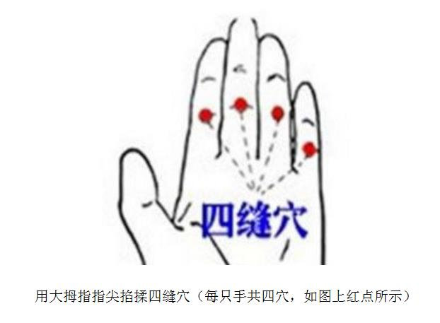

|
“如说修行”网上佛学院 呼吸念佛精要湛然 十念相续，积习成性。
〔十念相续，积习成性〕这是往生的可靠保证。详见《往生的条件》一文。〔相续〕念佛之念相连接，不被妄念间断。〔积习成性〕通过反复练习，使之成为本能。
一、引言呼吸念佛，是既摄心而又易于持久之妙法，并且性命双修。其方法是：鼻呼鼻吸的腹式呼吸，随着呼吸之入息出息而念佛，入息时心中默念“阿弥”、出息时心中默念“陀佛”。当然，也可以入息念一句“阿弥陀佛”，出息念一句“阿弥陀佛”。此乃宝王随息法门。令呼吸念佛念念相续，积习成性，十即十生，百即百生。 〔性命双修〕身心全面修炼。身的修炼，是指健康、长寿、快乐；心的修炼，是指悟道、成道、了生死。
唐代飞锡大师《念佛三昧宝王论》云：“世上之人，多以宝玉、水精、金刚、菩提、木槵为数珠矣。吾则以出入息为念珠焉。称佛名号，随之于息，有大恃怙（shì hù），安惧一息不还属后世者哉！余行住坐卧常用此珠，纵令昏昧，含佛而寝，觉即续之，必于梦中得见彼佛。如钻燧烟飞，火之前相；梦之不已，三昧成焉。面覩玉毫，亲蒙授记，则万无一失也。” 译文：世上的人，大多以宝玉、水精、金刚、菩提、木槵等为念珠。我则以出入息为念珠。称佛名号，随之于呼吸（出息入息），便有大依仗，哪里会惧怕一口气不来即属后世呢？我行住坐卧常用此珠（出入息），即使昏昧，也是含佛而入眠，只要一醒，立即继续呼吸念佛。这样来修持，必于梦中得见阿弥陀佛。如钻燧烟飞，火之前相；梦中不断地见佛，念佛三昧即当修成。面覩阿弥陀佛眉间玉毫，亲蒙阿弥陀佛授记往生，如此则万无一失也。 〔有大恃怙，安惧一息不还属后世者哉〕呼吸念佛积习成性后，人生的最后一息，一定是在念佛，别无二念，当然是临终正念往生，哪里会惧怕一口气不来呢？所以呼吸念佛是大恃怙（大依仗）。〔如钻燧烟飞，火之前相〕如钻木取火，有烟冒出来，就说明很快会起火了。烟飞是火起之前兆。这里用来譬喻梦中见佛是念佛三昧成就之前兆。〔钻燧（suì）〕亦作“钻鐩”。钻燧取火，是原始的取火法，燧为取火的工具。
印光大师非常推崇和赞叹呼吸念佛。他给谛闲大师的信中写道：“光（大师自称）自出家以来，即信净土一法。但以（但由于）业障所遮，二十年来，悠悠虚度。口虽念佛，心不染道。近蒙法师训励，誓期不负婆心。无奈昏散（昏沉散乱）交攻，依旧昔时行履。因日阅十余纸净典，以发胜进之心。至宝王随息法门（即上面飞锡大师的开示），试用此法，遂觉妄念不似以前之潮涌澜翻。想久而久之，当必有雾散云消，彻见天日之时。......光又谓只此一法，具摄五停心观。若能随息念佛，即摄数息、念佛二观（即摄数息观和念佛观，数息观止散乱、念佛观止业障）。而摄心念佛，染心渐可断绝（止贪欲），瞋恚必不炽盛（止嗔恚），昏散一去，智慧现前，而愚痴可破矣（止愚痴）。又即势至都摄六根法门（这又是大势至菩萨‘都摄六根，净念相继’之法门）。愚谓今之悠忽念佛者，似不宜令依此法，恐彼因不记数，便成懈怠。有肯心者，若不依此法，决定难成三昧。法师乘愿利人，自虽不用，当为后学试之，以教来哲。若是利根，一七、二七定得一心。纵光之昏钝鲁劣，想十年八年或可不乱矣。”（《与谛闲法师书》） 译文： 我自出家以来，即深信净土一法。但由于业障遮蔽，二十年来，悠悠（形容不勤奋）虚度时日。口虽念佛，心不在道上（念佛时在妄想）。近来蒙法师您教诲勉励，发誓一定不辜负您慈悲的亲切叮咛。无奈念佛之时，昏沉和散乱交相攻袭，依旧还是原来的老样子。 我现在每日阅读十余页净土经典，以发起殊胜精进之心。当读到宝王随息法门（即上面飞锡大师的开示）时，于是试用此法来念佛，便觉得妄念不像以前那样潮涌浪翻。想来这样坚持下去，久而久之，必定有妄念全消，唯存佛号之时。...... 我又认为，仅此一法，便全摄五停心观。若能随息念佛，即摄数息观（止散乱）和念佛观（止业障）。而且摄心念佛，尘染之心便可逐渐断绝，即止贪欲；瞋恚也一定不炽盛，便止嗔恚。昏沉散乱一去，智慧现前，而愚痴可破，即止愚痴。此呼吸念佛，又是大势至菩萨‘都摄六根，净念相继’之法门。 我以为，现今之悠忽（悠闲懒散）念佛者，似不宜叫他们呼吸念佛，恐怕他们由于不记每天念佛之数，便成懈怠。要是真正有决定心的念佛人，若不依此呼吸念佛之法，决定难成念佛三昧。法师您乘愿利人，自己虽然不必使用呼吸念佛，也应当为后学试验一番，以便具体地传授给那些有智慧的后人。使用此法，若是利根的人，七日或十四日（一七、二七）定得一心不乱。纵然如我之昏钝鲁劣的人，想来十年八年也会达到一心不乱。 〔不负婆心〕不辜负老婆心肠。“老婆心肠（禅林用语）”，意思是像老婆婆那样慈悲的亲切叮咛。〔宝王随息法门〕即上面“世上之人，多以宝玉、水精、金刚、菩提、木槵为数珠矣。吾则以出入息为念珠焉。......”一段开示。这是唐代飞锡大师所著《念佛三昧宝王论》中的开示，故称宝王随息法门。〔五停心观〕能使五种过失（贪欲、嗔恚、愚痴、业障、散乱）停止于心的观法。一、不净观，即观察一切根身器界皆属不净，以停止贪欲。二、慈悲观，即观察一切众生痛苦可怜之相，以停止嗔恚。三、因缘观，即观察一切法皆从因缘生，前因后果，历历分明，以停止愚痴。四、念佛观，即观察佛身相好，功德庄严，以停止业障。五、数息观，即观察呼吸出入之相，每一出入，皆暗数自一至十，以停止散乱。〔势至都摄六根法门〕《大势至菩萨念佛圆通章》云：“佛问圆通，我无选择，都摄六根，净念相继，得三摩地，斯为第一。”（译文：佛问如何证得圆通的，我没有选择其它方法，而是总摄六根，令妄念不起，唯有忆佛之念相续不断，而证得念佛三昧。此种修法，是第一殊胜。）〔六根〕眼、耳、鼻、舌、身、意。〔净念相继〕忆佛之念无有间断。〔三摩地〕即三昧。〔来哲〕后世智慧卓越的人。〔想十年八年或可不乱矣〕想来十年八年也会达到一心不乱。这里的“或”是谦词。
对于呼吸念佛，倓虚大师开示道：“还有一种最方便的法子，就是呼吸念佛。往里一喘气（吸气）的时候念‘南无阿弥’，往外一呼气的时候念‘陀佛’。这样，只要人有一口气就念一声佛，久而久之，时时刻刻，行住坐卧，不离一句阿弥陀佛，这方是真精进。当人临命终时，最后一息气欲断时，人一生的行业，也就随着最后呼吸的一声佛，去往生极乐世界，得见阿弥陀佛。” 倓虚大师还开示说：“行人端身正坐，调顺呼吸，不使有快慢不均，粗涩喘急，一呼一吸，平静缓慢。然后依呼吸念佛，四字六字均可，但以四字较好，将佛号分成二拍，如呼气念阿弥，吸气念陀佛。但要用腹部呼吸，注意下腹且须任其自然。此法凡休息、睡卧、坐立皆可用。若久练纯熟，正念不失，呼吸一断，即生西方，是持名念佛之上乘方法，有志西方者当留心焉。”
《持名念佛四十八法》云：“或于气静心平时，先想己身，在圆光中，默观鼻端，想出入息。每一息（出息和入息各算一息）默念阿弥陀佛一声，方便调息，不缓不急，心息相依，随其出入。行住坐卧，皆可行之，勿令间断，常自密持。摄心既久，息念两忘，即此身心与虚空等，持至纯熟，心眼开通，三昧忽尔现前，即是唯心净土矣！” 二、前行众生心思散乱，如野马狡猿，狂奔乱蹦，片刻不停。在这妄念丛生的情形下就来呼吸念佛，会感到难以下手，或者难以为继，甚至造成身体不适。所以，呼吸念佛之前，最好先修前行，扎下基础。基础愈牢实，以后的修学就愈顺畅、得力。 筑基的方法甚多，例如《觉知念佛》中就介绍了许多种方法。本文的筑基方法，是觉知腹部的起伏（升降），以培养专注、连贯、持久的觉知力，为 呼吸念佛打下扎实的基础。 常见的呼吸主要有两种方式：胸式呼吸和腹式呼吸。胸式呼吸以肋骨和胸骨活动为主，吸气时胸廓前后、左右径增大。由于呼吸时，空气直接进入肺部，故胸腔会因此而扩大，腹部保持平坦。本文之呼吸是采用腹式呼吸的顺呼吸法，即吸气时扩张腹肌（腹部上升），呼气时收缩腹肌（腹部下降），鼻呼鼻吸。这种呼吸方法，比较胸式呼吸而言，对身体健康的好处甚多。（详见《腹式呼吸》） 当你吸气时，腹部会逐渐上升；这时就专注地觉知腹部上升的过程，在心中标记“上”。当你呼气时，腹部会逐渐下降；这时就专注地觉知腹部下降的过程，在心中标记“下”。要点是：要持续地保持对腹部起伏的觉知。开始练习时，可以把手置于腹部，来感受腹部的起伏。 只要是在觉知腹部的起伏，就不会有妄念。若是妄念生起，就说明失掉了觉知，就要立即把注意力收回来，专注地觉知腹部的起伏。失掉，收回来；失掉，收回来；......。如果整整一个钟头都是在这样打拉锯战，你这一个钟头都没有白费。随着不断地练习，你会发现失掉觉知的次数愈来愈少，失掉与收回来之间的时间间隔愈来愈短，这就是进步。 当觉知腹部的起伏比较有把握时，便进一步去觉知腹部起伏过程中的感受（而不要去注意腹部的外形）。 在觉知腹部的起伏时，如果妄想炽盛，收回来比较困难，就不要再勉强去收，而是专注地观察妄想，看它要想什么，并将妄想分类标记：“分心”，“乱想”，或“计划”，等等。待到妄想削弱后，便又回到觉知腹部的起伏上来。 修炼时，就只有觉知腹部的起伏和观察妄想这两件事，而且是以觉知腹部的起伏为主，二者灵活地交替运用。 在专练时间之外，要尽可能见缝插针地练，而且要尽量保持对日常活动中各个动作的觉知（可参考《觉知禅》中“觉知动作”一章）。总之，抓紧一切机会练习觉知，培养觉知力，这是呼吸念佛的基本功力。绝不要轻忽每一个两三分钟的练功机会！ 开始时，主要是在坐、卧的情形下专练。然后逐步做到行、住（站立）也练。（经行，乃至日常步行时，可以四步一吸，四步一呼。）这样，二六时中，行住坐卧都在做功夫，功力就长进得快，而且适应性强。 当对腹部起伏的觉知清晰专一时，便可进入念佛阶段。
问：标记是否就是心中默念？ 答：不是。如果随着腹部的起伏默念“上”、“下”，那么当你念得熟了，就会出现这样的情形：实际上已经忘掉了觉知腹部的起伏，心中却还在机械式地念“上”、“下”。而标记是：当你觉知到腹部上升时，告诉自己这是“上”；当你觉知到腹部下降时，告诉自己这是“下”。没有觉知到，就没有标记。 三、念佛念念相续，毕命为期，行住坐卧，昼夜莫废。
〔念念相续〕念佛之念相连接，不被妄念间断。
呼吸念佛的方法是：鼻呼鼻吸的腹式呼吸，吸气时腹部上升（外凸），呼气时腹部下降（内凹）。开始练习时，可以把手置于腹部，感受腹部的起伏。腹部上升（吸气）时心中默念“阿弥”，腹部下降（呼气）时心中默念“陀佛”。在初始阶段，念佛的同时要觉知到腹部的起、伏，以此为拐杖。待到功夫成熟，这时就不再留意腹部的起、伏，只是随息而念，亦无妄念。如若出现妄念纷扰不止的情形，就要立即拾起拐杖，念佛的同时觉知到腹部的起、伏，即可止息妄念。 由于腹部有九条经络通过，呼吸念佛时，就在按摩这九条经络，保证五脏六腑的阴阳协调，同时也增加了呼吸深度，加大了肺的通气量（氧气的供应和二氧化碳的排出），因此祛病延年。详见《312经络养生法（视频）》。
念佛，最忌讳的是散漫无归——念着念着就被妄想裹挟，不知所云了。所以，在初学阶段，还应该在呼吸念佛时，加上十记法来帮助止息妄念：每呼吸一次记一次数，从一记到十（1，2，3，......，9，10；记5时小指曲，记6时小指伸），再从一记到十，终而复始。在记数时，用一只手的手指屈和伸来记：左手（也可以用右手）每呼吸一次屈一指，五指屈尽后，每呼吸一次伸一指，五指伸尽，即十个呼吸。 用手指的屈和伸来记数，这一点非常重要，其中奥妙你慢慢就会领悟到。待到功夫深了，便不再记数，而此时亦无妄念。当你平时已经用不着手指记数这一拐杖时，也不要把它忘记了。每当心烦意乱时，就要记得（一般人是不记得）立刻把这个拐杖拾起来，帮助你度过难关。愈是心烦意乱，就愈是要念佛，既能够及时消除业障的纠缠和祸殃，又能够迅速地提升功力，一举两得。所以，风口浪尖，正是好机会，要迎着困难上，把心烦意乱变成增上缘。 十记法还有一个好处是：每数到十，就检查一下这十个呼吸念得怎么样？及时发现问题，并且及时解决问题。然后有思想准备地抖擞精神念好下十个呼吸。这样即时反馈，即时处理，最初虽然显得费时费力，熟了就会得心应手，而且愈念愈精纯。这样持之以恒，就能够胸有成竹地达到一心不乱。 为了使呼吸念佛的功夫做得更加细密，还可以缓慢地腹式呼吸，在每一次呼吸中都做到心中有数：在这个呼吸中有无妄念？ 当十记法熟了，可以进一步做五十记法：每五个呼吸一次记一次数，从一记到十（1，2，3，......，9，10；记5时小指曲，记6时小指伸），再从一记到十，终而复始。在记数时，用一只手的手指屈和伸来记：左手（也可以用右手）每呼吸一次屈一指，五指屈尽后，每呼吸一次伸一指，五指伸尽，即呼吸了五十个呼吸。每次数到十，就检查一下这五十个呼吸念得怎么样？及时发现问题，并且及时解决问题。然后有思想准备地抖擞精神念好下一五十个呼吸。这样即时反馈，即时处理，最初虽然显得费时费力，熟了就会得心应手，而且愈念愈精纯。这样持之以恒，就能够胸有成竹地达到一心不乱。 在做五十记法时，要是继续曲伸另一只手的手指，则可记一百句佛号。也可以就一只手记两遍，这也是一百句佛号。
开始练习呼吸念佛时，主要是在坐、卧的情形下专练。然后逐步做到行、住（站立）也练。（经行，乃至日常步行时，念四字佛号，一字一步，四步一吸，四步一呼。）这样，二六时中，行住坐卧都在做功夫，功力就长进得快，而且适应性强。
念佛，最忌散漫无归。呼吸念佛（包括行走时的呼吸念佛）在练习阶段，一定要用手指曲伸来记数。这样一来，功夫是在掌控下进行，每十个呼吸或者五十个呼吸检查一下：念得怎么样？好在哪里，差在哪里？做到心中有数。然后根据反馈的信息，有针对性地改进，愈做愈细密，直至一心不乱。 要见缝插针，把修行融入日常生活之中。 每晚临睡前，都要小结：今天念佛念得怎么样？好在哪里，差在哪里？怎样改进？明天怎样来念？把心安住道上，在呼吸念佛中入眠。 四、炼心凡所有相，皆是虚妄（慧）；不取于相，如如不动（定）。 念念不放过，念念透得过。
呼吸念佛功夫熟了，就要历境炼心，有意识地做“看破、放下”功夫，在各种场合锻炼对境不生心的定慧力。著境生心，即落生死；对境不生心，生死便了。你会发现这是非常有趣、非常美妙的事情——“不取于相，如如不动”。以此来消除烦恼、习气和业障，逐步做到：内不随念转，外不为境牵。这一条，至为重要！至为重要！ 〔对境不生心，生死便了〕金刚经云：“诸菩萨摩诃萨，应如是生清净心：不应住色生心，不应住声香味触法生心；应无所住而生其心。”（注释详见《金刚经精解》） 烦恼千千万万，归纳起来就是三毒：贪、嗔、痴。念佛功夫得力，就要用佛号来伏烦恼，净其心地，储备往生资粮。古德云：“行人净业成熟，心地清净，与佛相应，临终方见阿弥陀佛现前，接引生西。”佛月在天，光照亿万心水。若心不净，如水荡浊，月虽在天，其影不彰。故临终思绪纷乱者，佛虽放光接引，犹盲不能见也。 〔三毒〕毒者，毒害也。贪嗔痴毒害出世善心，故名为毒。一、贪毒：引取之心，名之为贪。若以迷心对一切顺情之境便喜好引取，是名贪毒。二、嗔毒：嗔恚之心，名之为嗔。若以迷心对一切违情之境便不悦厌弃，是名嗔毒。三、痴毒：迷惑之心，名之为痴。若于一切事理之法无所明了，颠倒妄取，起诸邪行，是名痴毒。 贪嗔痴三毒中，贪是根本，嗔和痴均是由贪而生。因为贪爱不到、或者失去贪爱的，而有嗔恚；因为贪爱，于是违背义理，颠倒妄取，而有愚痴。所以要息灭烦恼，当在断除贪爱上下功夫。佛言：“离欲寂静，是最为胜。”（《佛说四十二章经》）
凡人不能无念，不念佛、法、僧，必念贪、嗔、痴。念贪、嗔、痴则杀、盗、淫等恶业蜂起，生死轮回无有止息。佛乃因势利导，抓住众生不能无念的习气，善巧方便地用一佛念来代替妄念，令众生将妄念转为佛念，染心换为净心，从而容易地往生净土，出离生死。彻悟大师云：“净心之要，亦无如念佛。一念相应一念佛，念念相应念念佛。清珠（澄清浊水之宝珠）下于浊水，浊水不得不清；佛号投于乱心，乱心不得不佛。”（《彻悟大师遗集》）所以，念佛就是于众生生死切近处作最亲切、最简易的转换。而作此转换的关键是：觉察。念念觉察，妄念一起，立即用佛号转掉。要切切实实地做“觉察-转掉”功夫，念念不放过，念念透得过。日久功深，自然打成一片，伏住烦恼，成就净业。净心的关键就是：用佛号将妄念转掉。 〔念念觉察〕念佛时，觉知当下一念。详见《觉知念佛》之“觉知当念”一章。〔念念不放过〕每一个妄念，都不要让它滑过（不被它瞒昧）。〔念念透得过〕每一个妄念，都不要被它笼罩，不听随它调弄，不当作实事，更不可被它绑架。 要了生死，就要知道生死之根，以及怎样来拔除生死之根。祖师开示道：生死之根就是贪嗔痴三毒，而拔除生死之根，就是在于此心一念转变之间不遗余力！要在日用现前境界，妻子儿女团聚之际，亲戚朋友交接之间，义利逆顺交攻之处，喜怒贪嗔未发之前，预先着眼觑定，真真实实，清清楚楚，见到如何是生死之根，并立即极力拔除。 五、答疑问：步行时可以呼吸念佛吗？ 答：可以。方法是：步行时默念“阿弥陀佛”，一步一字；四步一吸，四步一呼。这一方法虽妙，但如同骑自行车，有一个学会的过程，一旦掌握，其利无穷。呼吸仍然是腹式呼吸：吸时腹部外凸，呼时腹部内凹。
问：我使用呼吸念佛不能持久，久了会感到胸闷气短，很不舒服。怎么办？ 答：呼吸念佛的要点是：随息。也就是跟随自然的呼吸而念佛，而不要去控制或改变呼吸。呼吸念佛时的呼吸，应当与平时没有念佛时的呼吸一样。你现在要做的是，细心体会怎样来随息念佛（在“随”字上做功夫）而没有去控制或改变呼吸。先在静止状态下练，待到静中功夫熟练，才逐渐在动中做。 问：呼吸念佛久了，有时候感觉气不顺。后来我就采用鼓腹和收腹来帮助腹式呼吸：鼓腹时吸气，收腹时呼气。这样就解决了气不顺的问题。这样来呼吸念佛可以吗？ 答：完全可以。
问：我肠胃不好，在网上发现按摩四缝穴（用大拇指指尖掐揉穴位）可以治疗。所以我在呼吸念佛的同时，也掐四缝穴。其方法是：吸气时念“阿弥”，呼气时念“陀佛”，在呼气时掐穴位；每次呼气掐一次穴位，每一个穴位掐五次，心中默记数，如此轮流进行。（也可以单手操作：用拇指去掐同一只手上的四缝穴。）经过一段时间，肠胃的老毛病治好了，而且发现这样来念佛，不仅摄心、抗干扰，并容易持久。我的问题是：这样来念佛可以吗？

答：你的方法与念佛时手掐念珠类似，都是拐杖，是帮助摄心。手掐穴位的好处是不分场合，开会、聚谈、睡眠等等，都可以做。如果你感觉得摄心、抗干扰，并容易持久（念佛方法以满足这三条为佳），当然可以这样来念佛。与此同时，要在深信切愿上多下功夫。 应同修的要求，问者答道：讲一下我现在所使用的“呼吸念佛的同时也掐四缝穴”的具体方法，供大家参考。要点有三个方面：一、呼吸仍然是腹式呼吸：吸时腹部外凸，呼时腹部内凹。吸气时念“阿弥”，呼气时念“陀佛”。二、在呼气时掐穴位。两只手各用拇指去掐同一只手上的四缝穴，每一次呼气掐一穴，每一穴掐一次，依次掐食指、中指、无明指、小指，小指、无明指、中指、食指，食指、中指、无明指、小指，......，这样循环地掐。三、与此同时，专注连续地觉知佛号。清楚地知道佛号的念相（每个字发出的情形），以及是否只有念佛之念。我行住坐卧都使用这个方法，只不过步行时，是一步一字，四步一吸，四步一呼，掐穴和觉知佛号的方法不变。 问：上述掐穴之法，我试了一段时间，觉得很摄心。但我的肠胃没有毛病，这样做觉得繁琐。有没有简单一些的法子？ 答：你可以用手掌（单手或者双手都可以）的开合来取代掐穴：吸气时，手掌摊开，腹部外凸，念“阿弥”；呼气时，手掌握拢，腹部内凹，念“陀佛”。熟练后，手掌的开合可以轻微地做，甚至轻微到别人不会察觉；总之，以舒适、方便、持久为好。与此同时，专注连续地觉知佛号。清楚地知道佛号的念相（每个字发出的情形），以及是否只有念佛之念。 虽然如此，无论掐穴还是手掌开合，毕竟都是辅助动作。一旦完全掌握了呼吸念佛，在觉得没有必要时，就可以离开这些拐杖。
问：可以通过呼吸念佛来修念佛三昧吗？ 答：可以。念佛三昧旨在明心见性（详见《念佛三昧摸象记》）。为此，应当按照上面所介绍的呼吸念佛方法，达到一心不乱。然后在此基础上修念佛三昧，以证入明心见性的境界。其方法是：呼吸念佛时，以玄关内照下丹田。若有妄念生起，说明内照涣散（不专注、不连贯）。要立即抖擞精神，将内照重新聚焦，则妄念自息。久久行之，力极功纯，豁然和念脱落，证入无念无不念境界。 〔玄关〕亦称上丹田，在第三眼（天目）的位置。〔下丹田〕乃任脉之关元穴，在肚脐下三寸（四指宽）处，为藏精之所。下丹田是锻炼、汇聚、储存真气的主要部位。人的元气发源于肾，藏于丹田，借三焦之道，周流全身，以推动五脏六腑的功能活动。人体的强弱，生死存亡，全赖丹田元气之盛衰，所以保养丹田元气非常重要。丹田元气充实旺盛，就可以调动人体潜力，使真气能在全身循环运行。意守丹田，可以调节阴阳，沟通心肾，使真气充实，畅通八脉，恢复先天之生理机能，促进身体的健康长寿。〔久久行之〕这是般若熏无明，无明一破，法身顿现。〔力极功纯〕力量用到极处，功夫纯然一片。〔豁然〕形容开阔、通达。例如：豁然开朗，豁然贯通，豁然醒悟。豁然亦指开悟貌，例如《颜氏家训》：“积年凝滞，豁然雾解（雾气消散）。”苏洵《上欧阳内翰第一书》：“及其久也，读之益精，而其胸中豁然以明。”〔和念脱落〕能所双亡——能念之心和所念之佛一时脱落。 修念佛三昧有几点须注意：一、最好一开始就对诸法实相（详见《诸法实相》一文）和本性（详见《心、自性、如来藏》一文）有所认知；二、修持中若有什么境界，都要不受不著，方能向上；三、座下要历境炼心，不为所转，以实证本性。
问：我在参究念佛时，妄念少多了，可是昏沉袭来，却束手无策。要怎么样来对治昏沉？ 答：可以这样来对治昏沉：振作精神，时时仰头向上瞪视，并且做腹式深呼吸，用鼻深吸气（腹部外凸），屏息1秒，然后慢呼气（腹部内凹），屏息1秒，将一呼一吸掌握在15秒钟左右。与此同时，念佛并且清晰地觉知到腹部的起伏。这样一来，昏沉会逐渐退散。当昏沉消失后，便回到你原来念佛的方式上来。
参考阅读：
|